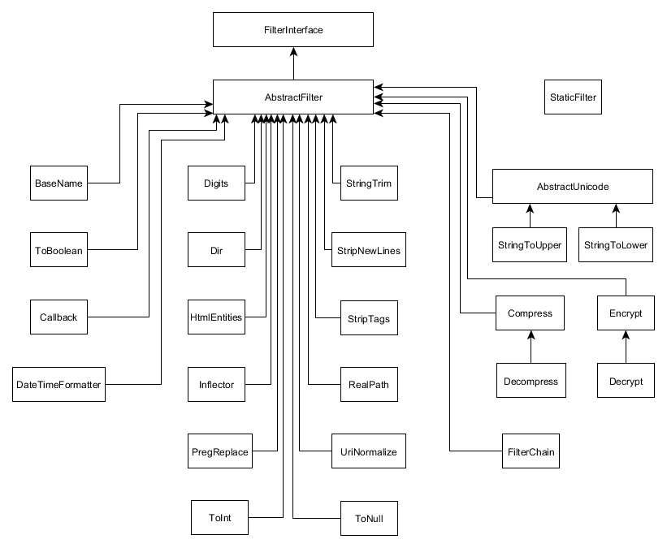

8.2. Vista General de los Filtros Estándar
Los filtros estándares que implementan la interfaz FilterInterface pertenecen al
espacio de nombres Zend\Filter 26. Un diagrama de herencia de la
clase de filtrado se muestra en la figura 8.1. En esta figura se puede ver que
la clase concreta base para la mayoría de los filtros es la clase AbstractFilter
que implementa la interfaz FilterInterface 27.
 Figura 8.1. Herencia de la clase Filter
26) En esta sección solo consideramos los filtros estándares que
pertenecen al namespace Zend\Filter aunque existen otros
filtros que se pueden considerar estándares también. Por
ejemplo, el namespace Zend\Filter\File contiene varios
filtros que se aplican cuando se procesa la carga de archivos
(estos filtros serán cubiertos en el próximo capítulo).
Además, el componente Zend\I18n define varias clases de
filtros para la configuración regional del usuario.
27) En la figura 8.1 podemos notar que hay varios filtros base
adicionales: el filtro AbstractUnicode es una clase base
para los filtros StringToUpper y StringToLower porque
ellos proveen la funcionalidad de conversión de caracteres
común a ambos. El filtro Decompress hereda del filtro
Compress porque estos filtros son en realidad muy parecidos.
Análogamente, el filtro Decrypt hereda del filtro Encrypt
porque ellos son uno reflejo del otro.
Podemos notar que hay un filtro extraño llamado
StaticFilterque no hereda de la clase baseAbstractFilter. Esto es porque la claseStaticFilteres realmente un "envoltorio", ella esta diseñada para ser un procurador (proxy) de otro filtro sin su instanciación explicita).
Los filtros estándares que provee el componente Zend\Filter junto con una breve
descripción para cada uno se muestran en la tabla 8.1.
Como podemos ver en la tabla los filtros estándar se pueden dividir a grandes rasgos en los siguientes grupos:
- Filtros de conversión (casting) para los datos de entrada a otro tipo de datos (integer, boolean, date-time, etc.).
- Filtros que manipulan la ruta de un archivo (obtener el nombre base, el nombre del directorio padre, etc.).
- Filtros que comprimen y codifican los datos de entrada.
- Filtros que manipulan las cadenas de caracteres (conversión a mayúsculas, cortar, reemplazo y remoción, normalización de URL, etc.).
- Filtros de procurador (proxy) que envuelven a otros filtros (
Callback,FilterChain,StaticFilter).
| Nombre de la clase | Descripción |
|---|---|
Boolean |
Regresa la representación booleana de $value. |
ToInt |
Convierte la entrada $value en un int. |
Digits |
Regresa la cadena de caracteres $value luego de remover toda los caracteres excepto los dígitos. |
ToNull |
Regresa null si el valor de entrada se puede tratar como nulo de lo contrario regresa el $value mismo. |
DateTimeFormatter |
Toma una cadena de caracteres con la fecha y la hora en un formato arbitrario y produce una cadena de caracteres con la fecha y la hora en un formato dado. |
BaseName |
Dada una cadena de caracteres que contiene la ruta a un archivo o carpeta el filtro regresara la última parte de la ruta. |
Dir |
Dada una cadena de caracteres que contiene la ruta a un archivo o carpeta el filtro regresara la ruta a la carpeta padre. |
RealPath |
Regresa el nombre de la ruta absoluta en su forma canónica. |
Compress |
Comprime los datos de entrada usando el algoritmo especificado (GZ por defecto). |
Decompress |
Descomprime los datos de entrada usando el algoritmo especificado (el efecto es inverso al del filtro Compress). |
Encrypt |
Codifica los datos de entrada usando el algoritmo criptográfico especificado. |
Decrypt |
Decodifica los datos de entrada previamente cifrados con el algoritmo criptográfico especificado. |
Inflector |
Ejecuta la modificación de una palabra para expresar una categoría gramatical diferente como tiempo, modo, voz, aspecto, persona, número, género y caso. |
PregReplace |
Ejecuta una búsqueda y remplazo a partir de una expresión regular. |
StringToLower |
Convierte una cadena de caracteres a minúsculas. |
StringToUpper |
Convierte una cadena de caracteres a mayúsculas. |
StringTrim |
Remueve los espacios en blanco (espacios, tabuladores, etc.) desde el comienzo hasta el final de la cadena de caracteres. |
StripNewlines |
Remueve el carácter de nueva línea de la cadena de caracteres. (códigos ASCII #13, #10). |
HtmlEntities |
Regresa la cadena de caracteres convirtiendo los caracteres a su correspondiente entidad HTML equivalente si existe. |
StripTags |
Remueve etiquetas (por ejemplo, <a></a>) y comentarios (ejemplo, <!-- -->). |
UriNormalize |
Convierte una URL a su forma «normalizada» y coloca al principio el esquema (por ejemplo, convierte www.example.com a http://www.example.com). |
Callback |
Permite usar una función de retrollamada (callback) como filtro. |
FilterChain |
Permite organizar varios filtros en una cadena. |
StaticFilter |
Regresa un valor filtrado a través de un filtro de clase especifico sin necesitar una instalación separada del objeto filtro. |